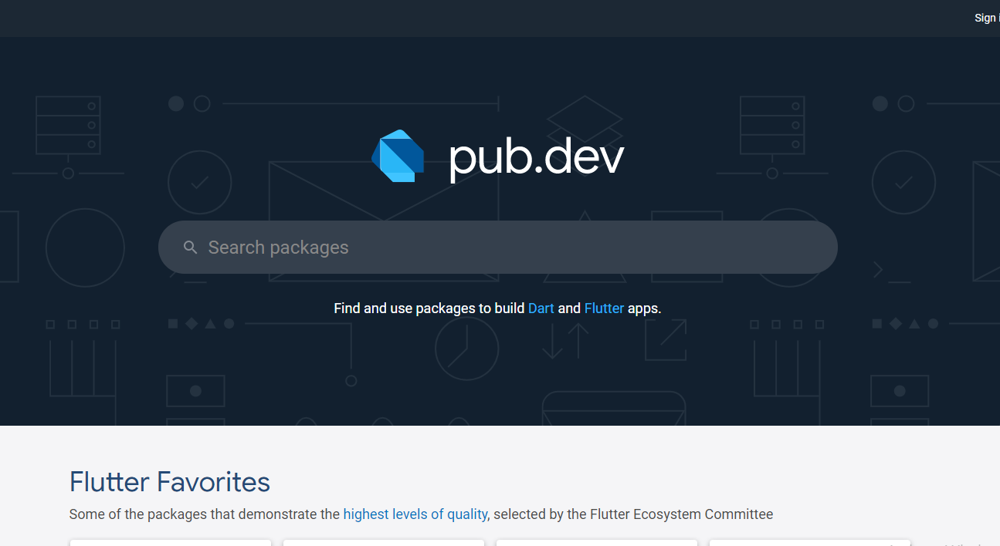

Flutter คือ Framework ที่ใช้สร้าง UI สำหรับ mobile application ที่สามารถทำงานข้ามแพลตฟอร์มได้ทั้ง iOS และ Android ในเวลาเดียวกัน(รองรับการสร้าง web และโปรแกรมใน desktop) โดยภาษาที่ใช้ใน Flutter นั้นจะเป็นภาษา dart ซึ่งถูกพัฒนาโดย Google และที่สำคัญคือเป็น open source ที่สามารถใช้งานได้แบบฟรี ๆ
โครงสร้างของภาษา DART คล้ายกับ C/C++ และ Java โดยที่จะมีความเป็นภาษาแบบ Structure Programming
แต่ก็ยังมีความสามารถแบบภาษาประเภท Object Oriented Programming ด้วย นั่นคือมี class และ
inheritance ให้ใช้งาน
ซึ่งสิ่งที่เด่นที่สุดสำหรับภาษา Dart ในตอนนี้คือเป็นภาษาที่ใช้ในการสร้าง Application ด้วยเฟรมเวิร์ก Flutter
นั่นเอง!
ตัวอย่างโปรแกรมของ Dart นั้นหน้าตาคล้ายๆ กับภาษา C มาก ถ้าใครเคยเขียนภาษา C หรือภาษาตระกูล C มาก่อน (เช่น C++, C#, Java) จะคุ้นกับ syntax พวกนี้ทำให้เรียนรู้ได้ไม่ยาก
void main(){
print("HelloWorld!");
}
ตัวโปรแกรมจำเริ่มทำงานที่ฟังก์ชัน main เป็นหลัก เราไม่สามารถเขียน statement
นอกฟังก์ชันได้การแสดงผลมาตราฐานจะใช้คำสั่ง print (ขึ้นบรรทัดใหม่เหมือน println ของ
Arduino)
เรื่องหนึ่งที่ควรจำคือภาษา Dart นั้นการเขียน ; (semi-colon) ไม่ใช่ optional
คือจำเป็นต้องใส่ ; ทุกครั้งหลังจบ statement ไม่สามารถละ ; ได้แบบภาษาตระกูล C ยุคใหม่ๆ เช่น
JavaScript หรือ Kotlin(ยกเว้นการใช้งาน widget ย่อยใน flutter)
ติดตั้งโปรแกรม Android Studio โดยดาวน์โหลดโปรแกรมได้ที่หน้าเว็บ developer.android.com

ทำการติดตั้งโปรแกรมโดยเลือกตำแหน่งติดตั้ง ตั้งค่าธีมของโปรแกรม ฯลฯ แต่อย่าลืมกดติดตั้ง Virtual Device ด้วยนะครับ

หลังจากติดตั้งเสร็จ ตัวโปรแกรมจะโชว์หน้าสร้างโปรเจคแบบนี้

เมื่อกดสร้างโปรเจคก็มีแอปสำเร็จรูปเบื้องต้น รวมถึงอุปกรณ์ที่ต้องการใช้

โดยภาษาเบื้องต้นที่ใช้ในการเขียนแอปของ Android Studio เดิมทีจะรองรับภาษา Java และ Kolin ซึ่งใครที่เชี่ยวชาญอยู่แล้วก็สามารถเขียนแอปเล่นได้เลย โดยเฉพาะภาษา Kotlin ที่สามารถสร้างแบบ cross platform ได้(แต่แอป iOS ยังต้องใช้ภาษา Swift อยู่เหมือนเดิม อิอิกรรม)

อันดับแรกให้โหลดตัว Flutter SDK มาจากเว็บของ Flutter โดยให้เลือกดาวน์โหลดตามระบบปฏิบัติการที่เราใช้อยู่
หลังจากนั้นให้แตกไฟล์แล้วจัดเก็บไว้ที่ไหนก็ได้ในคอมพิวเตอร์ของเราเช่น C:\src\flutter

จากนั้นกลับมาที่โปรแกรม Android Studio ให้ทำการติดตั้ง Plugin ของ Flutter โดยไปที่
File=>Settings..=>Plugins หรือถ้าหาไม่เจอก็กดรูปแว่นขยายแล้วค้นคำว่า Plugins ได้เลย หา plugin ของ
Flutter แล้วกด install

หลังจากติดตั้ง Plugin เสร็จเรียบร้อยแล้ว ให้ทำการรีสตาร์ทโปรแกรม Android Studio แล้วลองกดสร้างโปรเจคใหม่จะพบว่ามีคำสั่ง New Flutter Project..

จะมีรูปแบบให้เลือก เราจะเลือก Flutter Application จะที่จะใช้สร้างแอป ส่วนใครที่อยากสร้างโค้ดสำเร็จไว้ใช้ซ้ำๆหรืออยากสร้าง third-party SDK ให้ผู้อื่นใช้งานก็สามารถศึกษาเพิ่มเติ่มได้เลยครับ

ให้ตั้งชื่อแอปของเราและเลือกตำแหน่งไฟล์ Flutter SDK ที่เราโหลดมาเก็บไว้ในตอนแรก

หลังจากสร้างโปรเจคเสร็จเราจะได้โค้ดแอปสำเร็จรูปของ Flutter (เลขเพิ่มตามการกดปุ่มขวาล่าง)โดยเราสามารถนำมาเขียนต่อได้เลย ซึ่งเรายังไม่เห็นหน้าตาของแอป ถ้าเราอยากจะใช้เทสแอปจากโค้ดที่เขียนไว้ เราต้องใช้ Virtual Device ที่มีมาให้กับ Android Studio
ให้ไปที่ Tools=>ADV Manager หรือคลิกที่รูปมือถือในโปรแกรม จะเจอกับหน้าเมนู Android Virtual
Device Manager ที่จะมี Android Emulator สเปคต่างๆให้เราใช้งานเพื่อทดสอบแอป

ถ้าเราใช้โปรแกรมครั้งแรก เราอาจจะยังไม่มี Emulator ให้ใช้งาน เราสามารถสร้าง Emulator เพิ่มขึ้นมาใช้เองได้ โดยคลิกไปที่ Create Virtual Device จะมีอุปกรณ์ให้เลือกดังภาพ โดยจะสังเกตได้ว่ามีแต่ผลิตภัณฑ์ของ Google ทั้งนั้นเลยครับแต่สุดท้ายแล้วเราก็สามารถเอาไปใช้งานจริงได้ในเครื่องยี่ห้ออื่นๆได้แบบปกติ เพียงแค่รุ่นของระบบปฏิบัติการในเครื่องที่จะใช้ ไม่ต่ำเวอร์ชั่นของแอนดรอยที่เราตั้งค่าไว้ ส่วน Emulator ของ iOS จะต้องใช้โปรแกรม Xcode ใน MacOS

จากนั้นให้เลือกรุ่นของระบบปฏิบัติการที่จะใช้ใน Emulator ถ้ายังไม่ได้ติดตั้งก็ให้ดาวน์โหลดมาติดตั้งได้เลย

กด Launch this ADV ที่อุปกรณ์ที่เราจะใช้งาน

จะได้ Emulator มาใช้งานสามารถดู Youtube เล่น Facebook โหลดแอปจาก Play Store ได้ปกติ แต่ถ่ายรูป และโทรออกไม่ได้นะครับ เพราะจุดประสงค์ของ Emulator คือต้องการให้ใช้ทดสอบแอปที่เราสร้าง

เรามาลองทดสอบแอปที่เขาให้มากันเลย โดยคลิกที่ปุ่ม Run ดังรูปเลยครับแล้วรอซักพักนึง จะรอนานไม่นานก็ขึ้นอยู่กับความเร็วของคอม ที่เราใช้

จะได้แอปหน้าตาแบบนี้มา ซึ่งจะเป็นแอปที่จะนับเลขตามจำนวนครั้งที่กดปุ่ม แล้วแสดงที่หน้าจอ

สมมติว่า ถ้าเราเขียนแอปนี้ด้วย Java หรือ Kotlin แล้วอยากจะเปลี่ยนคำว่า
You have pushed the button this many times: เป็น แอปโง่ๆ หละ?
แน่นอนว่าเมื่อเราเปลี่ยนแค่ประโยคข้างต้นในภาษา Java หรือ Kotlin และอยากจะทดสอบใน Emulator คุณจะต้อง Run
แอปใหม่อีกรอบ ซึ่งจะทำให้เสียเวลาในการทดสอบ โดยเฉพาะตอนที่ต้องการทดสอบคำสั่งที่ซับซ้อน แต่ถ้าเป็นใน flutter
จะมีปุ่มรูปสายฟ้า Flutter Hot Reload
เพิ่มเข้ามาเมื่อกดปุ่มนี้จะเป็นเหมือนกับการรีเฟรชหน้าแอปของเราอย่างรวดเร็ว
ทำให้การทดสอบแอปที่มีการแก้ไขโค้ดบ่อยๆนั้นสะดวกเป็นอย่างมาก

จะได้ผลลัพธ์ดังภาพ

สำหรับใครที่ใช้งานโปรแกรม Visual Studio เขียนโค้ดบ่อยๆอยู่แล้วหรือชินกับโปรแกรมนี้ไปแล้ว หรือคอมพิวเตอร์ของเราสเปคไม่ดี ใช้โปรแกรม Android Studio แล้วช้า ก็สามารถเปลี่ยนไปใช้โปรแกรม Visual Studio ที่เร็วขึ้น ก็สามารถที่จะติดตั้ง Plugin ของ Flutter เพื่อใช้งานได้เลยครับ
ติดตั้งโปรแกรม Visual Studio Code โดยดาวน์โหลดโปรแกรมได้ที่หน้าเว็บ code.visualstudio.com
(เลือกให้ตรงกับระบบปฏิบัติการที่เราใช้งาน)

ทำการติดตั้งให้เรียบร้อย ก็จะได้โปรแกรม Visual Studio หน้าตาแบบในรูปเลย

จากนั้นให้ทำการติดตั้งส่วนเสริมของ Flutter โดยไปที่ View=>Command Palettle หรือกดปุ่ม
Ctrl+Shift+P

จากนั้นให้เลือกคำว่า Extensions: Install Extensions จริงๆแล้วกดเลือกเมนู Extensions หรือกด
Ctrl+Shitf+X เลยก็ได้นะ ลืมอิอิ

พิมพ์ค้นหาค้นหาคำว่า flutter เลือกส่วนเสริม Flutter แล้วกด install

จากนั้นไปที่ View=>Command Palettle แล้วเลือก Flutter: Run Flutter Doctor

จะมีเมนูเด้งขึ้นมาที่มุมขวาล่างให้ Locate SDK ของ flutter ซึ่งถ้าหากยังไม่ได้ดาวน์โหลดมาก็สามารถดาวน์โหลดมาได้เลย ส่วนใครที่ดาวน์โหลดมาแล้วตอนติดตั้ง Android Studio ก็เอาไฟล์อันนั้นมาใช้ได้เลยไม่ต้องโหลดซ้ำ
ดาวน์โหลด Flutter SDK ได้ที่นี่!
หลังจากติดตั้ง SDK เสร็จแล้ว ก็มาสร้างโปรเจค flutter ของเรา โดยไปที่ View=>Command Palettle
เลือก Flutter: New Application Project

เลือกที่เก็บโปรเจคและตั้งชื่อโปรเจคเราให้เรียบร้อยแล้วกดสร้าง แล้วรอแปปนึง(ไวกว่า Android Studio มากเลย) เราจะได้โปรเจค+โค้ดสำเร็จรูป(แอปที่จะนับเลขตามจำนวนครั้งที่กดปุ่ม แล้วแสดงที่หน้าจอ)มาหน้าตาเหมือนใน Android Studio เลยครับ

โดยสามรถกด Run แล้วขึ้นทดสอบบน Browser ของเราได้เลย(ใน Android Studio ก็ใช้ Browser ทดสอบได้นะ) เราก็จะได้เป็น Web App แบบในรูปเลย

ในการใช้งานแรกๆอาจจะมี Bug ขึ้นมาแนะนำให้ลองกด Start Debugging ดูก่อนนะครับ
ให้กด Tab สีฟ้าด้านล่างตามภาพ

จะมีอุปกรณ์ Emulator ให้เลือกใช้งานและสามารถสร้างเพิ่มได้ ซึ่งดึงจะเอาตัว Emulator ที่สร้างไว้ใน Android Studio มาโชว์ในนี้ด้วยนะครับ

อาจจะมีปัญหาเล็กน้อยในเรื่องของ ปุ่ม Hot Reload ที่ใช้งานไม่ได้ แต่สามารถใช้ปุ่ม Hot Restart แทนได้นะครับ
Flutter Package เป็น Public dependencies ที่สามารถนำมาใช้ในโปรเจคของตนเองได้โดยที่ไม่ต้องเขียนโค้ดมาใช้เองทั้งหมด ซึ่งมีทั้ง Package และ Plugin ต่าง ๆ โดยจะถูกรวบรวมไว้ใน pub.dev ซึ่งเราสามารถค้นหา Package ที่ต้องการแล้วนำมาใช้ทุ่นแรงได้
ไปที่ pub.devหรือถ้าไม่อยากเข้าเว็บหาให้ยุ่งยากก็สามารถกดค้นหา Package ที่ต้องการใน Google ได้เลยครับ
ในเบื้องต้นจะขอยกตัวอย่างการใช้งาน Package Percent Indicator ที่จะใช้เป็น UI แสดงกราฟิกจากค่าตัวเลขนะครับ

จะมี Tab สำคัญอยู่ 2 จุด คือ Installing สำหรับการดึง package นี้มาใช้งานในโปรเจคของเรา และ Example สำหรับดูตัวอย่างการใช้งานโค้ดจาก package นี้ ส่วน Readme จะเป็นหน้าแนะนำรูปร่างหน้าตาและวิธีใช้ Package เบื้องต้นซึ่งไม่สำคัญเท่าไหร่

ในขั้นแรกให้ไปที่ Installing แล้ว copy โค้ดในส่วนของ dependencies: เพื่อนำไปใช้ดาวน์โหลด Package โดยใน
Package นี้จะเป็น percent_indicator: ^2.1.9+1

จากนั้นไปที่ไฟล์ pubspec.yaml ในโปรเจคของเราแล้ววางโค้ด percent_indicator: ^2.1.9+1 ไว้ใต้คำว่า
dependencies: จากนั้นกดไปที่ Pub get หรือใช้คำสั่ง $ flutter pub get
เพื่อดาวน์โหลดไฟล์ Package มาใช้งาน

กลับไปที่ pub.dev ของเรา ให้เลื่อนมา copy โค้ด import ของ Package เพื่อใช้ระบุตำแหน่งไฟล์ Package
ที่ดาวน์โหลดมาใช้ในโปรเจค ใน Package นี้จะเป็น
import 'package:percent_indicator/percent_indicator.dart';

จากนั้นไปที่ไฟล์ main.dart แล้ววางโค้ด
import 'package:percent_indicator/percent_indicator.dart'; ก็เป็นอันเรียบร้อย

แล้วเราจะรู้โค้ดของ Package ได้ยังไง?
กลับไป pub.dev Package ของเราแล้วไปที่ Tab Example เราจะเห็นโค้ดตัวอย่างการใช้งานของ Package ตัวนี้ จะเรียกได้ว่าเป็นแอป 1 แอปเลยก็ได้นะครับ แต่ยังไม่ใช้ตัวอย่างทั้งหมดของ Package นี้ โดยจะมี Link example/lib/main.dart ให้เข้าไปดูรายละเอียดโค้ดเพิ่มเติ่มใน GitHub
ซึ่งเท่าที่ผมอ่านดูโค้ดใน Example แล้วมันยังเป็นแค่หน้าลิงค์ไปหน้าอื่นๆที่มี Package นี้เราเลยจำเป็นต้องเข้าไปเอารโค้ดใน GitHub

สังเกตุว่าจะมีไฟล์ย่อยใน flutter_percent_indicator/example/lib/ ซึ่งผมเลือกโค้ดจากไฟล์ sample_circular_page.dart
แน่นอนครับว่าถ้าเอาโค้ดจากไฟล์ dart ที่ไม่ใช่ main ของมันไปวางทั้งหมดในไฟล์ main ของโปรเจคเรา ตัว Dart
Analysis ในโปรแกรมเราจะขึ้นสีแดงแน่นอน เราจะเอาเฉพาะ
ส่วนที่เราจะใช้ก็พอครับ ผมจะเลือกCircularPercentIndicator(), จากชุดที่ 2 มาใช้นะครับ

ให้เอามาแทนที่ Text(), ในโปรเจคของเราตามรูปเลยนะครับ


ถ้าไม่ขึ้นสีแดงก็ลองกด Run บน Emulator ก็จะได้ผลลัพธ์แบบนี้

หรือถ้าเอาโค้ดมาใช้ทั้งหมดก็จะได้แอปหน้าตาแบบนี้

อันนี้จะเป็นการใช้งาน Package ของ Flutter เบื้องต้น ซึ่งที่ยกตัวอย่างมาเป็น Package ในส่วนของ Widget เสริม ยังมี Package อื่นๆที่เป็นรูปแบบ Platform Channel อีกหลายแบบ
ภาษาการเขียนโปรแกรมที่สร้างสรรค์โดย Apple เพื่อใช้ในการสร้างแอพสำหรับ iOS และ MacOS
เป็นไฟล์สำหรับนำเข้าไฟล์ต่างๆเช่นรูปภาพ หรือ dependencies ต่างๆ
เป็นโครงสร้างระบบเบื้องหลังให้กับแอปหรือเว็บ